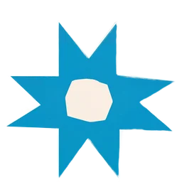

Stari Most
The stone arch over the Neretva and Mostar's main landmark.
A stone arch, emerald water, and a compact old city made for slow mornings, late light, and one unforgettable crossing.
Stari Most links the banks of the Neretva and anchors a historic quarter shaped by Ottoman, Mediterranean, and European layers.
Stone lanes, mosque courtyards, copper stalls, and riverside coffee stay within a short walk of Stari Most.